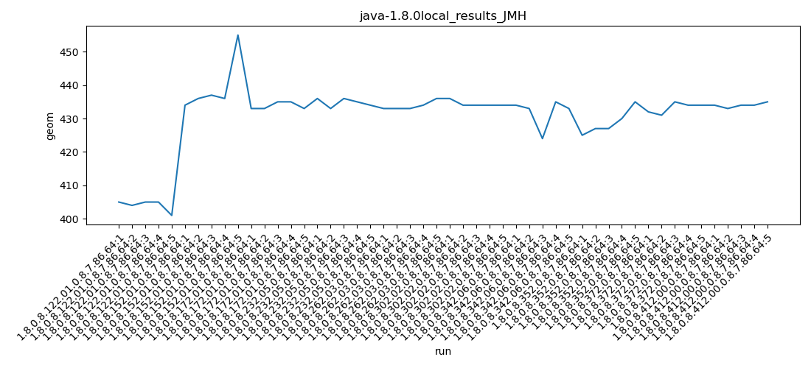
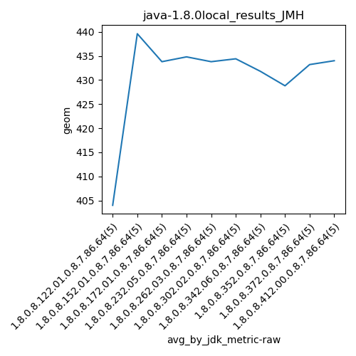
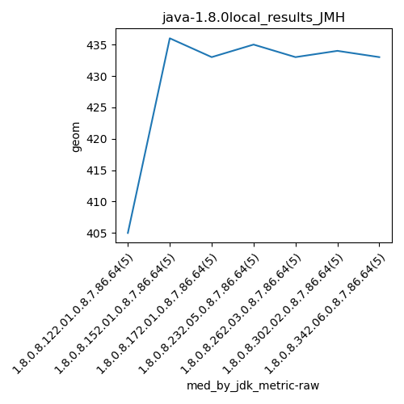
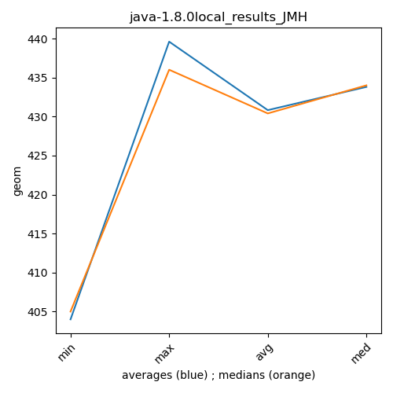

java-1.8.0 JMH
Context at bottom
/home/jvanek/git/benchmarks-in-nested-virtualisation-toolchain/final_results/local_results/local_results_JMH
java-1.8.0
JMH
local_results_JMH
final score
Expected number of java-1.8.0 JDKs: 7
1st avgmed_alljdks_metric:
/home/jvanek/git/benchmarks-in-nested-virtualisation-toolchain/final_results/result_processing.py /home/jvanek/git/benchmarks-in-nested-virtualisation-toolchain/final_results/local_results/local_results_JMH geom False
values: [405, 404, 405, 405, 401, 434, 436, 437, 436, 455, 433, 433, 435, 435, 433, 436, 433, 436, 435, 434, 433, 433, 433, 434, 436, 436, 434, 434, 434, 434, 434, 433, 424, 435, 433]

Expected number of iterations: 5
final number of values: 35 out of 35
Pass rate: 100.0%
values: (401, 455, 430.3142857142857, 434)

** accuracy from all jdks and runs
more is better
MIN: 401
MAX: 455
AVG: 430.3142857142857
MED: 434
Relative differences 1:
MIN-MAX: 12.0 %
MIN-AVG: 7.0 %
MIN-MED: 8.0 %
MAX-MIN: -13.0 %
MAX-AVG: -6.0 %
MAX-MED: -5.0 %
AVG-MED: 1.0 %
stored to java-1.8.0.properties. sort | uniq that!
2nd avgmed_by_jdk_metric:
values: [404.0, 439.6, 433.8, 434.8, 433.8, 434.4, 431.8]

values: [405, 436, 433, 435, 433, 434, 433]

values: (404.0, 439.6, 430.3142857142857, 433.8)
values: (405, 436, 429.85714285714283, 433)

** accuracy from all jdks where runs were avged
more is better
MIN: 404.0
MAX: 439.6
AVG: 430.3142857142857
MED: 433.8
Relative differences 1:
MIN-MAX: 8.0 %
MIN-AVG: 6.0 %
MIN-MED: 7.0 %
MAX-MIN: -9.0 %
MAX-AVG: -2.0 %
MAX-MED: -1.0 %
AVG-MED: 1.0 %
stored to java-1.8.0.properties. sort | uniq that!
** accuracy from all jdks where runs were medianed
more is better
MIN: 405
MAX: 436
AVG: 429.85714285714283
MED: 433
Relative differences 1:
MIN-MAX: 7.0 %
MIN-AVG: 6.0 %
MIN-MED: 6.0 %
MAX-MIN: -8.0 %
MAX-AVG: -1.0 %
MAX-MED: -1.0 %
AVG-MED: 1.0 %
stored to java-1.8.0.properties. sort | uniq that!
/home/jvanek/git/benchmarks-in-nested-virtualisation-toolchain/final_results/local_results/local_results_J2DBENCH
java-1.8.0
JMH
/home/jvanek/git/benchmarks-in-nested-virtualisation-toolchain/final_results/local_results/local_results_RADARGUNs1
java-1.8.0
JMH
/home/jvanek/git/benchmarks-in-nested-virtualisation-toolchain/final_results/local_results/local_results_RADARGUNs3
java-1.8.0
JMH
/home/jvanek/git/benchmarks-in-nested-virtualisation-toolchain/final_results/local_results/local_results_SPECJBB
java-1.8.0
JMH
/home/jvanek/git/benchmarks-in-nested-virtualisation-toolchain/final_results/local_results/local_results_DACAPO
java-1.8.0
JMH
pass rates:
local_results_JMH=100.0%
Context:
- local_results
- JMH